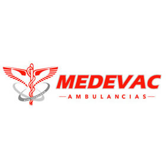
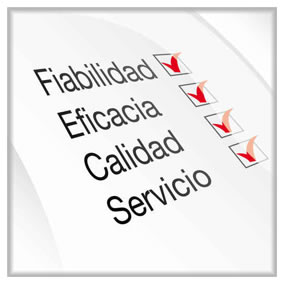

MEDEVAC S.A de C.V. somos una empresa mexicana innovadora en el área médica, especializada en el servicio de atención de urgencias médicas, traslados terrestres y aéreos de pacientes críticos y no críticos, servicio de consulta médica a domicilio, capacitación en primeros auxilios y venta de equipo electromédico.12 años de experiencia nos respaldan y más de 15,000 pacientes nos respaldan.
Para nosotros el tiempo es vida, por lo que contamos con el mejor equipo de alta tecnología para atender a su paciente. Nuestras ambulancias cumplen con la norma oficial mexicana establecida por la secretaria de salud del estado de Morelos NOM-237 SSA1-2004. Nuestro personal está altamente calificado, se constituye únicamente por médicos y paramédicos, quienes constantemente están siendo capacitados de manera que la atención que se brinda a los pacientes es la más eficaz.
Nuestras unidades se encuentran aseguradas, se someten a mantenimientos preventivos, descontaminación periódica y cumplen con la norma oficial mexicana para unidades de emergencia.
Contamos con una central de radio telefonía que opera las 24 horas los 365 días del año.
Medevac Ambulancias, calidez humana y profesionalismo en nuestro servicio.
¿Quiénes Somos?

Misión
Proporcionar nuestros servicios con excelente calidad, satisfacer las necesidades de nuestros clientes de manera integral por ende garantizar una atención rápida segura y confiable.
Brindar atención médica de emergencia, auxilio en accidentes, asistencia médica domiciliaria, traslado de pacientes y asistencia médica pre-hospitalaria
Visión

Ser la empresa privada líder en el ramo de la atención médica de emergencia, auxilio en accidentes, asistencia médica domiciliaria, traslado de pacientes y asistencia médica pre-hospitalaria. Extender nuestros servicios a lo largo del territorio mexicano, cumpliendo con los estándares de calidad y confiabilidad que nuestros clientes merecen.